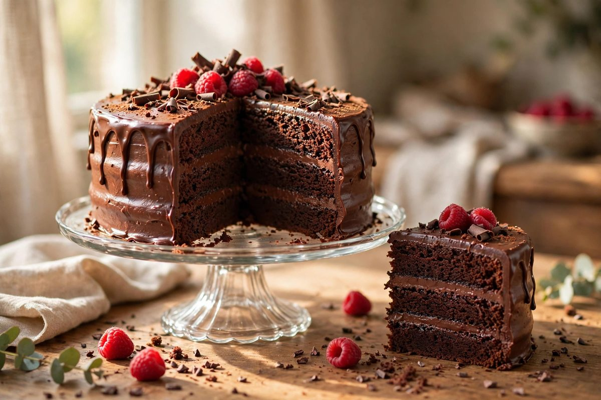

Home » Guides
Gluten-Free Cakes

A good gluten-free cake should be moist, tender, and full of flavour, and there is no reason it cannot be. Some cakes are naturally gluten-free, because they use ground almonds or polenta instead of flour, and others work well with a 1-to-1 gluten-free flour blend. The key is choosing the right recipe, using enough moisture, and not over-baking. This guide covers the cakes that work best without gluten, how to adapt a wheat recipe, and how to fix the common problems.
Cakes that are naturally gluten-free
Some of the best gluten-free cakes never needed wheat at all. A flourless chocolate cake uses eggs, chocolate, and butter, and it is rich, dense, and naturally gluten-free. An almond cake uses ground almonds instead of flour and is moist and fragrant. A polenta and lemon cake uses fine polenta and ground almonds, and it keeps well for several days. A pavlova uses egg whites and sugar and is naturally gluten-free. Starting with a naturally gluten-free cake is the easiest way to get a good result, because you are not fighting the recipe.
Adapting a wheat cake recipe
Most sponge and traybake recipes can be adapted by replacing wheat flour with a 1-to-1 gluten-free flour blend, weight for weight. Add an extra egg for structure, and a little more liquid, because gluten-free flour absorbs more moisture. Let the batter rest for ten minutes before baking, which improves the texture. Bake at a slightly lower temperature for a little longer, and check the cake with a skewer: it should come out clean, but the cake should still feel soft. Cool the cake fully in the tin before turning it out, because gluten-free cake is fragile when hot.
Keeping cakes moist
Gluten-free cakes dry out faster than wheat cakes, so moisture matters. Use oil or melted butter rather than just butter, because oil keeps a cake moist for longer. Add yoghurt, sour cream, or buttermilk to the batter. Use fruit, such as grated apple, mashed banana, or berries, which adds moisture and flavour. Do not over-bake: check the cake five minutes before the recipe time. Once cool, store the cake in a sealed container, and eat it within two to three days, or freeze slices for later.
Common cake problems
If your cake sinks in the middle, the oven may have been too hot, the batter too wet, or the cake under-baked. If it is dry, add more liquid or an extra egg next time, and check that you are not over-baking. If it is dense, your flour blend may be too heavy, or you may have over-mixed the batter. If it is gritty, let the batter rest longer before baking, or use a finer flour blend. If it crumbles when sliced, let it cool completely first, and use a sharp knife. Keep notes on each bake so you can improve the recipe.
Cake for a celebration
A gluten-free cake is the centrepiece of a celebration, so choose a recipe you trust and practise it once before the big day. Bake the cake the day before, store it in a sealed container, and decorate it on the day, so you are not rushed. Use fresh fruit, cream, or chocolate for decoration, and keep the design simple, because a good cake does not need elaborate decoration. If you are baking for someone with celiac disease, use clean equipment and a clean tin, and tell them the cake is gluten-free. A homemade cake, made with care, is always appreciated.
Frequently Asked Questions
Can I use gluten-free flour in any cake recipe?
Most sponge and traybake recipes adapt well with a 1-to-1 blend. Add an extra egg and a little more liquid, and let the batter rest.
Why did my gluten-free cake sink?
It was probably under-baked, or the oven was too hot. Bake at a slightly lower temperature and test with a skewer before taking it out.
How do I keep a gluten-free cake moist?
Use oil in the batter, add yoghurt or fruit, and do not over-bake. Store it in a sealed container once cool.
Important: if you have celiac disease or a wheat allergy, always check labels and look for certified gluten-free products. This site is general information only — talk to your doctor or a registered dietitian before changing your diet.